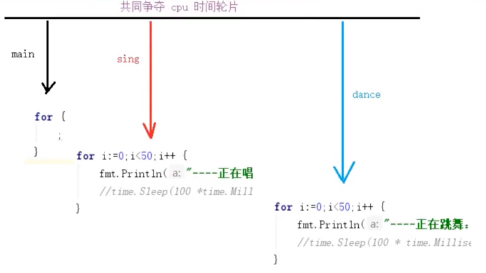
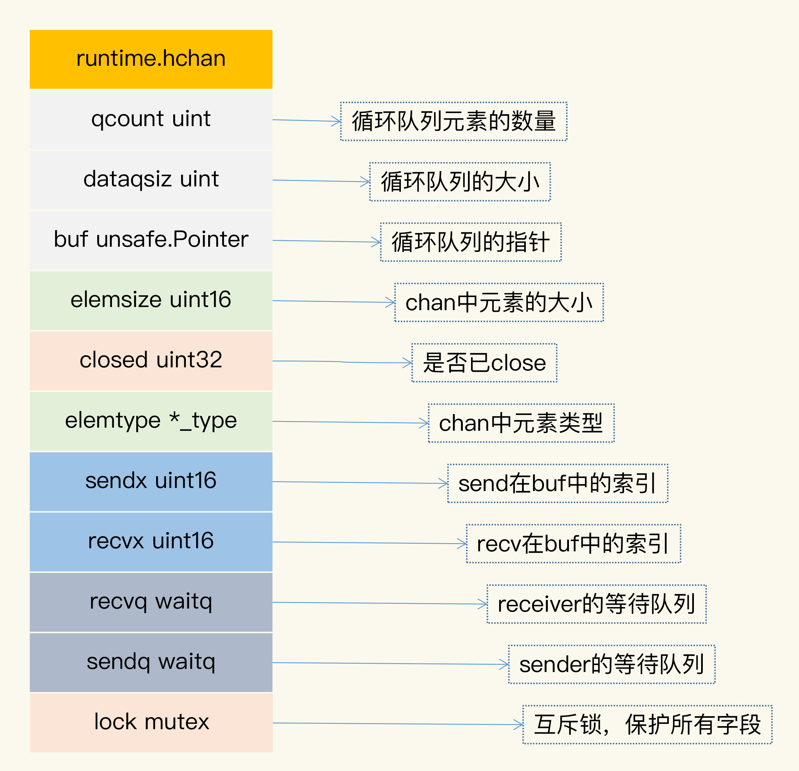
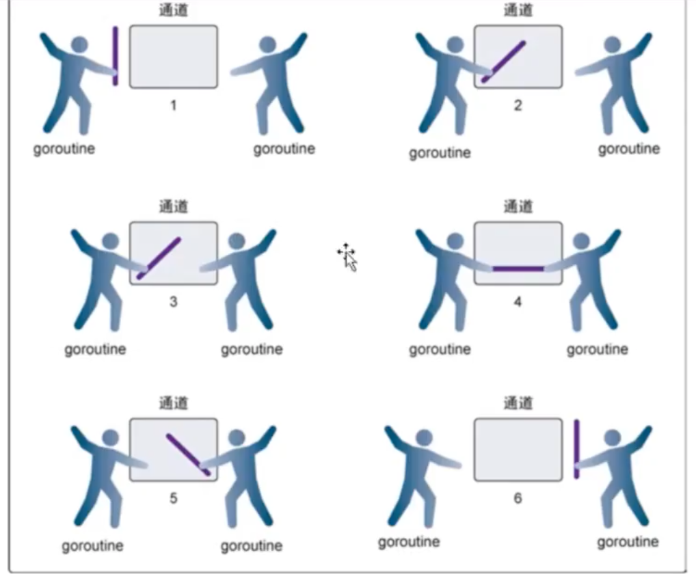
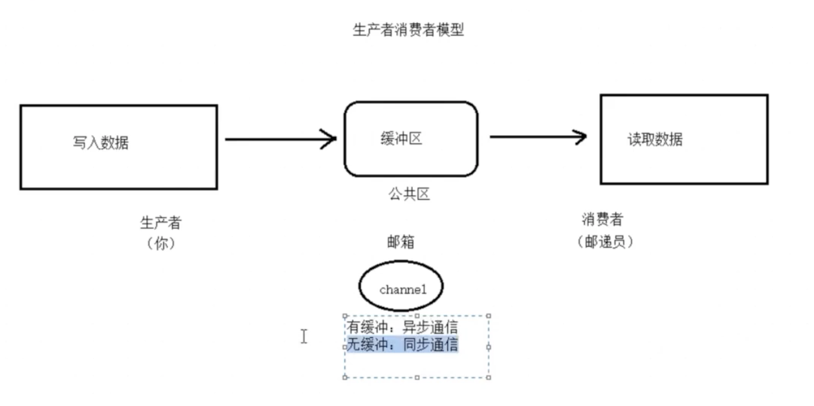
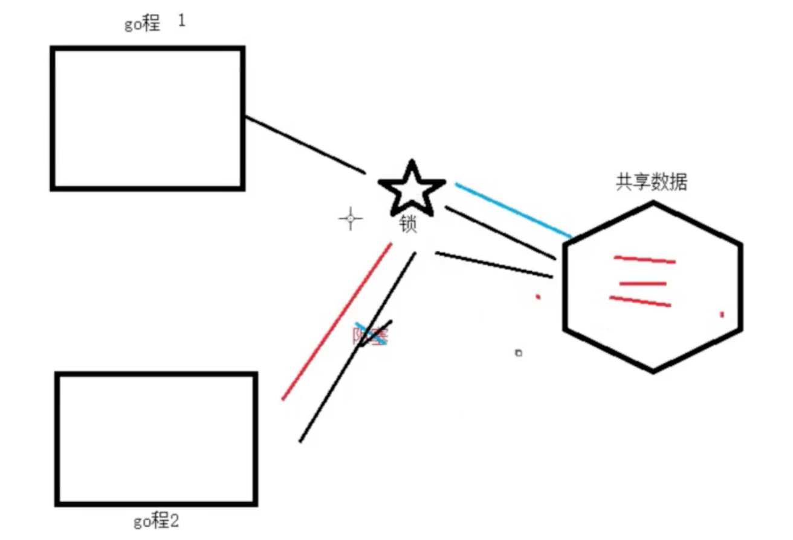
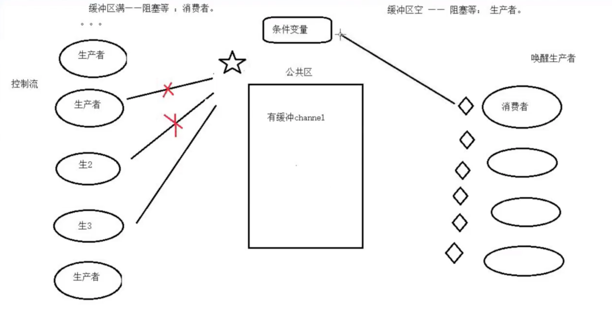

1. 并行与并发
1.1 并行（parallel）
并行，同一时刻，有多条指令在多个处理器上同时执行。并行需要借助多核cpu实现。
1.2 并发
宏观：在用户体验上，程序在并行执行
微观：多个计划任务，顺序执行。在飞快的切换，轮换使用cpu时间轮片；（cpu时间调度算法）
进程状态：
初始态、 就绪态、 运行态、 挂起（阻塞）态、终止（停止）态
线程并发：
什么是线程
Lwp（light weight process）轻量级进程，本质上仍是进程（Linux下）
进程： 独立地址空间，拥有PCB
线程： 有独立的PCB，但没有独立的地址空间（共享）
区别： 在于是否共享地址空间，独居（进程）； 合租（线程）
线程： 最小的执行单位
进程： 最小分配资源单位，可看成是只有一个线程的进程；
1.3 线程同步
同步即协同步调，按预定的先后次序运行。
线程同步，指一个线程发出某一功能调用时，在没有得到结果之前，该调用不返回，同时其它线程为保证数据一致性，不能调用该功能；
举例：A，B两张银行卡取钱。当两个线程访问共享资源时，如果没有协调机制，会产生与时间有关的错误。—— 锁
因此，所有“多个控制流，共同操作一个共享资源”的情况，都需要同步。
1.3.1 线程同步机制：
互斥锁（互斥量）：建议锁，拿到锁以后，才能访问数据，没有拿到锁的线程，阻塞等待。等到拿锁的线程释放锁。
读写锁： 一把锁（读属性、写属性），写独占，读共享，写锁优先级高
信号量：
条件变量：
1.4 协程并发
协程： coroutine，也叫轻量级线程。
与传统系统级线程和进程相比，协程最大优势在于“轻量级”，可以轻松创建上万个而不会导致系统资源崩溃。而线程和进程通常很难超过1万个。这也是协程别称“轻量级线程”的原因。
一个线程中可以有任意多个协程，但某一时刻只能有一个协程在运行。多个协程分享该线程分配到的计算机资源。
在协程中，调用一个任务就像调用一个函数一样，消耗的系统资源最少！但能达到进程、线程并发相同的效果。
1.5 小结
在一次并发任务中，进程、线程、协程都可以实现，从系统资源消耗的角度出发来看，进程相当多，线程次之，协程最少。
进程并发：优点是稳定性强，开销较线程大。
线程并发：优点是节省资源，尤其是调度时，线程与线程之间切换的时候。而进程间切换的开销就比较大一些。
协程并发： 效率高，系统利用率高
2. goroutine
Go语言为并发编程而内置的上层API基于顺序通信进程模型CSP（communicating sequential processes）。这就意味着显式锁都是可以避免的。因为Go通过相对安全的通道发送和接受数据以实现同步，这大大地简化了并发程序的编写。
Go语言中的并发程序主要是用两种手段来实现。goroutine 和 channel
3.1 概论
1 | func main() { |

Goroutine 的并发机制；main goroutine中的for{} 占据较长的时间。可以确保两个goroutine能执行完毕；
Goroutine的特性：
主go程结束，子go程随之退出；
在Go里，无需修改现有顺序式的代码，就可以通过goroutine以并发的方式运行任意数量的任务；
3.1.1 启动goroutine
只需在调用前面加一个go关键字；
1 | import ( |
3.1.2 不止一个goroutine
每次使用go关键字都会产生一个新的goroutine
表面上看，goroutine似乎在同时运行，但由于计算机处理单元有限，其实技术上来说，这些goroutine不是真的在同时运行；
- 计算机处理器会使用“分时”技术，在多个goroutine上轮流花费一些时间；
- 在使用goroutine时，各个goroutine的执行顺序无法确定；
1 | func main() { |
3.1.3 goroutine的参数
向goroutine传递参数就根向函数传递参数一样，参数都是按值传递的（传入的是副本）
1 | func main() { |
在使用goroutine时，各个goroutine的执行顺序无法确定；
3.2 runtime包
3.2.1 Gosched
runtime.Gosched() 用于让出CPU时间片，让出当前goroutine的执行权限，调度器安排其它等待的任务运行，并在下次再获得cpu时间轮片的时候，从该让cpu的位置恢复执行。
当再次获得cpu时，从出让位置继续回复执行；
—— 时间片轮转调度算法；
1 | func main(){ |
3.2.2 Goexit
调用runtime.Goexit(), 将立即终止 当前goroutine执行，调度器确保所有已注册defer延迟调用被执行；
return和Goexit之间的差异
return：返回当前函数调用给调用者；后续语句不糊执行了。return之前的defer生效，之后的defer不生效了；
Goexit：结束调用该函数的当前goroutine，Goexit()之前注册的defer都生效；
1 | func test(){ |
3.2.3 runtime.GOMAXPROCS()
调用runtime.GOMAXPROCS() 设置可以并行计算的CPU核数最大值，并返回之前的值；
返回值：上一次设置的核心数
3. channel
channel是Go语言中的一个核心类型，可以把它看成管道（FIFO，first in ，first out）。并发核心单元通过它就可以发送或接收数据进行通讯，这在一定程度上又进一步降低了编程难度；
channel是一个数据类型，主要用来解决协程的同步问题以及协程之间数据共享的问题
goroutine运行在相同的地址空间，因此访问共享内存必须做好同步，goroutine奉行通过通信来共享内存，而不是共享内存来通信；
引用类型channel可用于多个gouroutine通讯，其内部实现了同步，确保并发安全；
CSP是Communicating Sequential Process的简称，直译为通讯顺序进程，或者叫做交换信息的循序进程，是用来描述并发系统中进行交互的一种模式；
csp允许使用进程组件来描述系统，它们独立运行，并且只通过消息传递的方式通信；go通过引入Channel这个新的类型，来实现CSP的思想；
Don‘t communicate by sharing memory, share memory by communication; (执行业务处理的goroutine不要通过共享内存的方式通信，而是要通过Channel通信的方式分享数据)
Don‘t communicate by sharing memory: 是传统的并发编程处理方式，就是指，共享的数据需要锁保护，goroutine需要获取到锁，才能并发访问数据；
share memory by communication：类似CSP模型的方式，通过通信的方式，一个goroutine可以把数据“所有权”交给另外一个goroutine；
- 啥时候用channel
Go开发者极力推荐使用channel，不过，这两年，大家意识到，channel并不是处理并发问题的“银弹”，有时候使用并发原语更简单，并且不容易出错。
- 共享资源的并发访问使用传统并发原语；
- 复杂的任务编排和消息传递使用channel；
- 消息通知机制使用channel，除非只想signal一个goroutine，才使用Cond；
- 简单等待所有任务的完成用WaitGroup，也有Channel的推崇者用Channel，都可以；
- 需要和Select语句结合，使用Channel；
- 需要和超时配合时，使用Channel和Context；
3.0 channel应用场景的五种类型
3.0.1 数据交流
当作并发的buffer或者queue，解决生产者 - 消费者问题。多个goroutine可以并发当作生产者（producer）和消费者(Consumer)
3.0.2 数据传递
一个goroutine将数据交给另一个goroutine，相当于把数据的拥有权（引用）托付出去；
例题：有4个goroutine，编号为，1，2，3，4 没秒会有一个goroutine打印出它自己的编号，要求你编写程序，让输出的编号总是按照1，2，3，4，1，2，3，4.。。 这个顺序打印出来；
为了实现顺序的数据传递，可以定一个令牌的变量，谁得到令牌，谁就可以打印一次自己的编号，同时将令牌传递给下一个goroutine，我们尝试使用chan来实现；
1 | package main |
如上面注释代码所示，channel实现顺序打印1，2，3，4.实际上就是利用token的，来将多个channel串联；因为每个for循环中的channel如果在读写两端没有数据写入或读取的话。channel是被阻塞挂起的；
这类场景有一个特点，就是当前持有数据的goroutine都有一个信箱，信箱使用chan实现，goroutine只需要关注自己的信箱中的数据，处理完毕后，就把结果发送到下一家的信箱中；
4.0.3 信号通知
一个goroutine可以将信号（closing，closed, data ready等）传递给另一个或者另一组goroutine
chan类型有这样一个特点，chan如果为空，那么receiver接收数据的时候就会阻塞等待，直刀chan被关闭或者有新的数据到来，利用这个机制，我们可以实现wait/notify的设计模式；
除了正常业务处理时的wait/notify，经常碰到的一个场景，就是程序关闭的时候，我们需要在退出之前做一些清理，这个时候，经常用到chan
- 退出的时候分为两个阶段
- closing，代表程序退出，但是清理工作还没做
- closed，代表清理工作已经做完；
1 | package main |
4.0.4 任务编排
可以让一组goroutine按照一定的顺序并发或者串行的执行，这就是编排的功能；
多个chan的编排方式，共5种
4.0.4.1 Or-Done模式
使用“信号通知”实现某个任务执行完成后的通知机制，在实现时，我们为这个任务定义一个类型为chan struct{}类型的done变量，等通知任务结束后，我们就可以close这个变量，然后，其他receiver就会收到这个通知；
这是有一个任务的情况，如果有多个任务，只要有任意一个任务执行完，我们就想获得这个信号，这就是Or-Done模式
比如，你发送同一个请求到多个微服务节点，只要任意一个微服务节点返回结果，就算成功，实现如下
1 | package main |
4.0.4.2 扇入模式
4.0.4.3 扇出模式
4.0.4.4 Stream
介绍一种把Channel当作流式管道使用的方式，也就是把Channel看作流（Stream）,提供跳过几个元素，或者是只取其中几个元素等方法
下面这个方法一个数据slice转换成流
1 | func asStream(done <-chan struct{}, values ...interface{}) <-chan interface{} { |
流创建好之后，下面介绍实现流的方法
- takeN: 只取流中前n个数据
- takeFn: 筛选流中数据，只保留满足条件的数据：
- takeWhile: 只取前面满足条件的数据，一旦不满足条件，就不再取：
- skipN: 跳过流中前几个数据；
- skipFn: 跳过满足条件的数据；
- skipWhile: 跳过前面满足条件的数据，一旦不满足条件，当前这个元素和以后的元素都会输出给Channel的receiver
1 | func takeN(done <-chan struct{}, valueStream <-chan interface{}, num int) <-chan interface{} { |
4.0.4.5 Map-Reduce
1 | package main |
4.0.5 锁
利用Channel也可以实现互斥锁的机制；
要想使用chan实现互斥锁，至少有两种方法，
一种方式是先初始化一个capacity等于1的channel，然后再放入一个元素。这个元素就代表锁，谁取得了这个元素，就相当于获取了这把锁。
另一种方式是，先初始化一个capacity等于1的channel，它的空槽代表锁，谁能成功把元素发送这个Channel，谁就获取了这把锁；
1 | package main |
用buffer等于1的chan实现互斥锁，在初始化这个锁的时候往Channel中先塞入一个元素，谁把这个元素取走，谁就获取这把锁，把元素放回去，就是释放了锁。元素在放回chan之前，不会有goroutine能从chan中取出元素的，这就保证了互斥性；
利用select+chan的方式，很容易实现TryLock，Timeout的功能。具体来说就是，在select语句中，我们可以使用default实现TryLock，使用一个Timer来实现Timeout的功能；
4.1 channel语法
channel可以在多个goroutine之间安全的传值；
通道可以用作变量、函数参数、结构体字段。。。
创建通道用make函数，并指定其传递数据的类型
1 | c:= make(chan int) |
Channel类型分为 只能接收，只能发送，既可以接收又可以发送三种类型；
1 | ChannelType=("chan" | "chan" "<-" | "<-" "chan") |
1 | chan string // 可以发送接收string |
channel是一个对应make创建的底层数据结构的引用；
当复制一个channel或用于函数参数传递时，我们只是拷贝了一个channel引用，因此调用者和被调用者将引用同一个channel对象。和 其它的引用类型一样，channel的零值也是nil
定义一个channel时，也需要定义发送到channel的值的类型。channel可以使用内置的make函数来创建。
1 | // Type 指定channel收发数据的类型； |
当参数 capacity=0 时，channel是无缓冲阻塞读写的，当capacity>0 时，channel有缓冲、是非阻塞的，直到写满 capacity个元素才阻塞写入；
channel一边可以存东西，另一边可以取东西。channel通过 <- 来接收和发送数据，发送和接收数据语法；
1 | channel <- value // 发送value到channel |
nil是 chan的零值，是一种特殊的chan，对值是nil的chan的发送接收调用者总是会阻塞；
go内建的函数 close，cap，len都可以操作chan类型： close会把chan关闭掉，cap返回chan的容量，len返回chan中缓存的还未被取走的元素数量；
for range ch{} 用于清空chan
4.2 channel实现原理
4.2.1 channel的数据结构

- qcount ：代表chan中已经接收但还没被取走的元素的个数，内建函数len可以返回这个字段的值；
- dataqsiz： 队列的大小，chan使用一个循环队列存放元素，循环队列很适合这种生产者 - 消费者的场景；
- buf： 存放元素的循环队列的buffer
- elemtype 和elemsize： chan中元素的类型和size，因为chan一旦声明，它的元素类型是固定的，即普通类型或者指针类型，所以元素大小也是固定的；
- sendx： 处理发送数据的指针在buf中的位置，一旦接收了新的数据，指针就会加上elemsize，移向了下一个位置。buf的总大小是elemsize的整数倍，而且buf是一个循环列表
- recvx： 处理接收请求时的指针在buf中的位置，一旦取出数据，此指针会移动到下一个位置
- recvq： chan是多生产者多消费者的模式，如果消费者因为没有数据可读而被阻塞了，就会被加入到recvq队列中；
- sendq：如果生产者因为buf满了而阻塞，会被加入到sendq队列中；
4.2 groutine 通信
每当一个进程启动时，系统会自动打开三个文件，标准输入·标准输出·标准错误 —— 对应三个文件：stdin、 stdout、 stderr
stdin对应的硬件 ——硬盘
stdout对应的硬件—— 屏幕
stderr对应的硬件——屏幕
当进程圆形结束，操作系统会自动关闭三个文件；
1 | func printer(s string) { |
1 | func person1() { |
channel有两个端：
一端： 写端（传入端） chan <-
另一端： 读端（传出端）<- chan
要求： 读端和写端必须同时满足条件，才能在chan上进行数据流动。否则，则阻塞；
（读端去读了，chan没有，就是读端阻塞。写端写了，但是chan没有读，就是写端阻塞。总之就是谁操作了，阻塞谁。）
4.3 无缓冲的channel
无缓冲的channel(unbuffered channel)是指在接收前没有能力保存任何值的通道；
这种类型的通道要求发送goroutine 和接收 goroutine同时准备好，才能完成发送和接收操作。否则，通道会导致先执行发送或接收操作的goroutinue阻塞。
这种对通道进行发送和接收的交互行为本身就是同步的，其中任意一个操作都无法离开另一个操作单独存在。
阻塞：由于某种原因数据没有到达，当前协程持续处于等待状态，直到条件满足，才解除阻塞。
同步： 在两个或多个协程（线程）间，保持数据内容一致性的机制；
1 | ch: make(chan string) |
4.3.1 channel同步，数据传递
1 | func main() { |

第1步，两个goroutine都到达通道，但哪个都没有开始执行发送或接收
第2步，左侧的goroutine将它的手伸进了通道，这模拟了向通道发送数据的行为，这时，这个goroutine会在通道中被锁住，直到交换完成；
第3步，右侧的goroutine将它的手放入通道，这模拟了从通道里接收数据，这个goroutine一样也会在通道中被锁住，直到交换完成
在第4步和第5步，进行交换，并最终，在第6步，两个goroutine都将它们的手从通道里面拿出来，这模拟了被锁住的goroutine得到释放，两个goroutine现在都可以去做其他事情了；
1 | func main() { |
*为什么第二行不是 “子go程 i= 1” *
因为fmt.Println("主go程读", num)是IO操作，耗时（访问硬件）可能需要等待；
channel应用与 两个goroutine中，一个读，一个写；
具备同步的能力，读、写同步
有缓冲channel
4.3.2 channel的len和cap
1 | var channel = make(chan int) |
有缓冲channel
通道容量为非0， len(ch): channel中剩余未读取数据个数。cap(ch): 通道容量
channel应用于两个go程中，一个读，另一个写
缓冲区可以进行数据存储，存储至容量上限，阻塞，具备异步能力，不需要同时操作channel缓冲区（发短信）
1 | func main() { |
4.4 关闭channel
如果发送者知道，没有更多的值需要发送到channel的话，那么让接收者也能及时知道没有多余的值可接收将是有用的，因为接收者可以停止不必要的接收等待。这可以通过内置的close函数来关闭channel实现；
确定不再向对端发送接收数据时，使用close关闭channel
对端可以判断channel是否关闭
1 | if num, ok:= <-ch; ok == true { |
1 | func main() { |
总结
1:数据没发送完，不应该关闭。
2 已经关闭的channel，不能再写入数据
3 写端已经关闭的channel，可以从中读取数据，
读无缓冲channel 读到0， —— 说明写端关闭
读有缓冲channel，如果缓冲区有数据，先读数据。读完数据可以无限读，读到0
4.5 单向channel
默认的channel是双向的， var ch chan int ch:=make(chan int)
单向写channel： var sendCh chan <- int sendCh = make(chan <- int)
单向读channel： var recvCh <- chan int recvCh = make(<- chan int)
转换：
- 双向channel 可以隐士转换为任意一种单向channel
1 | sendCh = ch |
- 单向channel不能转换为双向channel
1 | ch = sendCH/recvCh // error!!! |
传参：传【引用】
1 | ch := make(chan int) |
单向channel的好处，约束子函数行为。
1 | package main |
4.6 生产者消费者模型
单向channel最典型的应用是“生产者消费者模型”
所谓“生产者消费者模型”： 某个模块（函数等）负责产生数据，这些数据由另一个模块来负责处理（此处的模块是广义的，可以是类、函数、协程、线程、进程等）产生数据的模块，就形象地成为生产者，而处理数据的模块，就称为消费者。
单单抽象出生产者和消费者，还够不上是生产者/消费者模型。改模式还需要有一个缓冲区处于生产者和消费者之间，作为一个中介。生产者把数据放入缓冲区，而消费者从缓冲区取出数据。
1 | 生产者——》缓冲区——》消费者 |
举例，假如需要寄出一封信，大致流程如下：
- 把信写好——相当于生产者制造数据
- 把信放入油桶——相当于生产者把数据放入缓冲区
- 邮递员把信从邮筒取出——相当于消费者把数据取出缓冲区
生产者：发送数据端
消费者：接收数据端
缓冲区的好处
- 解耦（降低生产者和消费者之间耦合度）
- 生产者把制造出来的数据往缓冲区一丢，就可以再去生产下一个数据了；（生产者和消费者数量不对等时，能保持正常通信）基本不需要依赖消费者的处理速度；
- 缓存，生产者和消费者处理数据速度不一致时，暂存数据（如果生产者制造数据时快时慢，缓冲区的好处就提体现出来了。当数据制造快消费者来不及处理，未处理的数据可以暂时存在缓冲区中。等生产者的制造速度慢下来，消费者再慢慢处理掉）

Channel 实现缓冲区
有缓冲channel和无缓冲channel都能实现缓冲区
有缓冲channel 异步通信 用于对实时不敏感的需求；
无缓冲channel 同步通信，用于实时需求；
4.7 channel作为参数传递，是引用传递
4.8 模拟订单
订单处理就是典型的生产消费模式
当很多用户单击下订单按钮后，订单生产的数据全部放到缓冲区，然后消费者将队列中的数据取出来发送到管理系统
通过生产者消费模式，将订单系统与仓库管理系统隔离开，且用户可以随时下单。如果订单系统直接调用仓库系统，那么用户单击下订单按钮后，要等到仓库系统的结果返回，这样速度会很慢；
4.9 定时器
time.Timer
Timer是一个定时器，代表未来的一个单一事件，你可以告诉timer你要等待多长时间
1 | type Timer struct { |
它提供一个channel，在定时时间到达之前，没有数据写入timer.C会一直阻塞，直到定时时间到，系统自动向timer.C这个channel中写入当前时间，阻塞即被解除；
4.10 channel（通道）发送、接收
使用左箭头操作符 <- 向channel发送值或从channel接收值；
1 | c <- 99 // 向通道发送值， 把值为 99 的值 发送给通道c |
发送操作会等待直到另一个goroutine尝试对该channel进行接收操作为止；
- 执行发送操作的goroutine在等待期间将无法执行其它操作
- 未在等待channel操作的goroutine仍然可以继续自由的运行
执行接收操作的goroutine将等待直到另一个goroutine尝试向该channel进行发送操作为止；
1 | func main() { |
4.11 使用select处理多个通道
前面的例子中是使用一个channel来等待多个 goroutine，这种做法在所有goroutine都产生相同类型值的时候是好用的。但实际开发中，情况并不只是如此；程序通常需要等待不同类型的值；
当等待通道中某些值的时候，不想等太久。或者想在网络请求等待数秒之后就将其设置为超时而不是白白等待好几分钟。go标准库提供了一个time.After函数，该函数返回一个channel，该channel在指定时间后会接收到一个值（这个值是由go运行时的一个goroutine发送的 ）；
如果程序想继续从goroutine接收值，那必须等到所有goroutine都结束睡眠或我们耐心耗尽为止。这意味着程序必须同时等到time.After这个计时器channel 和其它channel。这个时候就能使用select语句。select语句能做到这一点。
select语句与switch有点像
- 该语句包含的每个case都持有一个通道，用来发送或接收数据；
- select会等待直到某个case分支的操作就绪，然后就会执行该case 分支；
- select语句不包含任何case的情况下将永远等下去
1 | func main() { |
注意： 即使已经停止等待goroutine，但只要main函数还没返回，仍在运行的goroutine将会继续占用内存；（有条件，尽量清理掉）
4.12 nil通道
值为nil的通道
如果不使用make初始化channel，那么channel变量的值就是nil(零值)
对nil通道进行发送或接收不会引起panic，但会导致永久阻塞；
对nil通道执行close函数，那么会引起panic
2.3.1 nil通道的用处：
对于包含select语句的循环，如果不希望每次循环都等待select所涉及的所有通道，那么可以先将某些channel设置为nil，等到发送值准备就绪之后，再将channel变成一个非nil值并执行发送操作；
3 阻塞和死锁
当goroutine在等待channel的发送或接收时，我们就说它被阻塞了；
除了goroutine本身占用少量的内存外，被阻塞的goroutine并不消耗任何其它资源；
- goroutine静静地停在那里，等到导致其阻塞的事情来解除阻塞
当一个或多个goroutine因为某些永远无法发生的事情被阻塞时，我们称这种情况为死锁，而出现死锁的程序通常会崩溃或挂起；
1 | // 引发死锁的例子 |
3.1 地鼠装配线
Go允许在没有值可供发送的情况下通过close函数关闭通道
- 例如close(c)
通道被关闭后无法写入任何值，如果尝试写入将引发panic
尝试读取被关闭的通道会获得与通道类型对应的零值；
注意： 如果循环里读取一个已关闭的通道，并没有检查通道是否关闭，那么该循环可能会一直运转下去，耗费大量CPU时间
执行以下代码可得知通道是否被关闭
v,ok := <-c v为通道得到的值，ok bool类型，如果ok为false，那么说明此通道已关闭；
1 | func sourceGopher(downstream chan string) { |
3.2 常用模式
从通道读取值，直到它关闭为止（常用）
- 可以使用range关键字达到该目的
1 | func sourceGopher(downstream chan string) { |
homework
- 编写一个流水线部件（一个goroutine），他需要记住前面出现的所有值，并且只有在值之前从未出现过的情况下才会将值传递至流水线的下一个阶段，假定第一个值永远不是空字符串
- 编写一个流水线部件，它接收字符串并将它们拆分成单词，然后向流水线的下一阶段一个接一个发送这些单词（可以用strings.Fields函数）
4 并发状态
4.1 共享值与竞争条件（race condition）
工厂某些生产线出现库存不足的情况，它们需要订购更多的原材料。尽管每条生产线都有固定电话，但是工厂只有一条共享的电话路线。当一个工人拿起电话下订单的时候，另一只地鼠可能会拿起电话拨号。对正在讲话的前一个工人产生干扰，而之后可能还会有其它的工人尝试使用电话。最终就是所有工人一头雾水，订单也无法下达。
为了解决这个问题，工厂工人必须达成某些协议。使得同一时间之内只有一只地鼠使用电话。而go语言里共享值的概念就跟共享电话有些相似。
当有两个或者多个goroutine同时使用共享值的时候，程序可能出错。把这种多个goroutine争相使用值的情况称之为竞争条件或者竞争状态（race condition）而go的compiler实际上包含了尝试在代码里发现静态条件这个功能。
两个goroutine同时读取，并不会产生 race condition。
4.2 Go的互斥锁(mutex)
Mutex= mutual exclusive
相互的 独占的
一个工厂想出一个很好的主意，在工厂地板中间放置一个玻璃罐，并在玻璃罐中放置了一个金属令牌。每次想要打电话的地鼠都需要从罐子里面取出令牌。然后在打电话的过程中一直持有它。然后打完电话再把它放回到罐子里面。如果有一只地鼠想打电话，但是没有在罐子里面发现令牌。就需要轮训等待直到令牌归还为止。go语言的互斥锁就相当于此玻璃罐。goroutine就可以通过互斥锁阻止其它的goroutine在同一时间进行某些事情。为了保护互斥锁的互斥性质，程序在访问被保护的东西的时候必须得非常的小心。互斥锁有两个方法 Lock 和 Unlock, Lock相当于从金属罐里面取出令牌，Unlock相当于把令牌放回玻璃罐；
如果有goroutine尝试在互斥锁已经锁定的情况下，再调用lock方法，那么它就需要等待解锁之后再次上锁。为了正确使用互斥锁，就要确保锁访问共享值的代码必须先锁定互斥锁，然后才能执行所需的操作。并且在操作完成之后必须解除互斥锁，任何不遵循这一模式的代码都可能引发竞争条件。基于此原因，互斥锁在绝大多数情况下，只会在包内进行使用；这个包会通过互斥锁保护自定义的内容，并将相应的lock和unlock调用，巧妙的隐藏在函数和方法的背后。和channel不一样，互斥锁并未内置在go语言中。而是通过sync包来引入的；
1 | package main |
互斥锁定义在被保护的变量之上
1 | # test |
4.2 互斥锁的实现机制
互斥锁是并发控制的一个基本手段；是为了避免竞争二建立的一种并发控制机制；
临界区：
临界区就是一个被共享的资源，或者说是一个整体的一组共享资源，比如对数据库的访问、对某一个共享数据结构的操作，对一个IO设备的使用；对一个连接池中的连接的调用；
使用互斥锁，限定临界区只能同时由一个线程持有；互斥锁又名排他锁
Mutex是使用最广泛的同步原语，有人也叫做并发原语；
4.2.1 同步并发原语
mutex是使用最广泛的同步原语；
- 同步原语
互斥锁Mutex
读写锁RWMutex
并发编排WaitGroup
条件变量Cond
Channel
- 同步原语适应的场景
共享资源：
并发读写共享资源，会引发数据竞争，所以需要Mutex，RWMutex这样的并发原语来保护
任务编排：
需要goroutine按照一定的规律执行，而goroutine之间有相互等待或者依赖的顺序关系，常常使用WaitGroup或Channel来实现；
消息传递：
信息交流以及不同的goroutine之间的线程安全的数据交流，常常使用channel；
4.2.2 Locker 接口
1 | type Locker interface { |
Mutex 和 RWMutex都实现了Locker接口；
4.2.3 sync.Mutex
控制等待一组goroutine全部做完任务；
1 | package main |
上面如果不加 mutex.Lock，我们发现最终结果得不到100000， 说明count++ 不是个原子操作；因为操作不原子，所以就可能有并发问题；
4.2.4 go race detector
go run -race atomic.go
1 | ================== |
4.2.5 mutex的用法
1 | // 很多情况，mutex会嵌入到其他struct中使用；mutex不会因为没有初始化出现空指针或者是无法获取到锁的情况； |
- 把获取锁，释放锁，计数加一的逻辑封装程一个方法，对外不需要暴露锁等逻辑
1 | package main |
4.3 互斥锁的隐患和易错点
4.3.1 死锁
两个或者两个以上的进程（线程，goroutine）在执行过程中，因争夺共享资源而处于一种互相等待的状态，如果没有外部干涉，它们都将无法推进下去，此时，我们称系统处于死锁状态或者系统产生了死锁；
如果你想避免死锁，只要破坏这四个条件中的一个或者几个就可以了
- 互斥；
- 持有和等待 goroutine持有一个资源，并且还在请求其他goroutine持有的资源；
- 不可剥夺 资源只能有持有它的goroutine来释放；
- 环路等待 存在一组等待的进程，p={p1,p2,…pn},p1等待p2, p2等待 pn, pn等待 p1，这就形成了一个环路等待的死结；
环路等待； 物业需要派出所证明，派出所需要物业证明。结果就陷入死锁状态。派出所和物业是两个goroutine，派出所证明和物业证明是两个资源，双方都持有自己的资源而要求对方的资源；而且自己的资源自己持有，不可剥夺；
所以为了保证这个互斥锁的使用安全，遵守以下两个原则
- 尽可能的简化互斥锁保护的代码
- 对每一份共享状态只使用一个互斥锁
4.3.2 Lock/Unlock不成对出现
4.3.3 Copy已使用的Mutex
package sync的同步原语在使用后是不能复制的，Mutex是最常用的一个同步原语，它也是不能复制的；原因在于Mutex是一个有状态的对象，它的state字段记录这个锁的状态；
1 | type Counter struct { |
4.3.4 重入
可重入锁：
当一线程获取锁时，如果没有其他线程拥有这个锁，那么，这个线程就成功获取到这个锁。之后，如果其他线程再请求这个锁，就会处于阻塞等待的状态。但是，如果拥有这把锁的线程再请求这把锁的话，不会阻塞，而是成功返回，所以叫可重入锁（有时也叫做递归锁）。只要你拥有这把锁，你可以一直调用，比如通过递归实现一些算法，调用者不会阻塞或死锁
mutex不是可重入锁
因为mutex的实现中没有记录哪个goroutine拥有这把锁，理论上，任何goroutine都可以随意地Unlock这把锁，所以没办法计算重入条件；
1 | func foo(l sync.Locker){ |
如何实现一个可重入锁，实现锁的关键点要记住当前是哪个goroutine持有这个锁；
4.4 WaitGroup
WaitGroup很简单，就是package sync用来做任务编排的一个并发原语，它要解决的就是并发-等待的问题；现在有一个goroutine A在检查点（checkpoint）等待一组goroutine全部完成，如果在执行任务的这些goroutine还没全部完成，那么goroutine A就会阻塞在检查点，直到所有goroutine都完成后才能继续执行；
很多操作系统和编程语言都提供了类型的并发原语，比如Linux的barrier，Pthread(POSIX线程)中的barrier;
1 | func (wg *WaitGroup) Add(delta int) // 设置计数值 |
1 | type Counter struct { |
4.5 Cond
go标准库提供Cond的原语的目的是，为等待/通知场景下的并发问题提供支持，Cond通常应用于等待某个条件的一组goroutine，等条件变为true的时候，其中一个goroutine或者所有的goroutine都会呗唤醒执行；
真正使用Cond的场景比较少，一旦遇到需要使用Cond的场景，更多地会使用Channel的方式去实现；
- Cond的基本用法
Cond关联的Locker实例可以通过c.L访问，它内部维护着一个先入先出的等待队列；
1 | type Cond |
1 | func main(){ |
4.6 once
once可以用来执行且仅仅执行一次动作，常常用于单例对象的初始化场景
1 | func (o *Once) Do(f func()) |
sync.Once只暴露了一个方法Do，你可以多次调用Do方法，但是只有第一次调用Do方法时f参数才会执行，这里的f是一个无参无返回值的函数；
1 | package main |
4.7 context
在API之间或者方法调用之间，所传递的除了业务参数之外的额外信息；
1 | type Context interface{ |
4.8 atomic
原子操作，一个原子在执行的时候，其他线程不会看到执行一半的操作结果；在其他线程看来，原子操作要么执行完了，要么还在执行；就像一个最小的例子-原子一样，不可分割;
再来看一个例子，假设你在开发应用程序的时候，需要从配置服务器中读取一个节点的配置信息。而且，在这个节点的配置发生变更的时候，你需要重新从配置服务器中拉去一个份新的配置并更新。你的程序中可能有多个goroutine都依赖这份配置，涉及到对这个配置对象的并发读写，你可以使用读写锁实现对配置对象的保护，在大部分情况下，你也可以利用atomic实现配置对象的更新和加载；
atomic原子操作还是实现lock-free数据结构的基石
在实现lock-free的数据结构时，我们可以不使用互斥锁，这样就不会让线程因为等待互斥锁阻塞休眠，而是让线程保持继续处理的状态。另外，不使用互斥锁的话，lock-free的数据结构还可以提供并发的性能；
4.8.1 atomic提供的方法
atomic操作的对象是一个地址，你需要把可寻址的变量的地址作为参数传递给方法，而不是把变量的值传递给方法；
- Add
1 | func AddUint32(addr *uint32, delta uint32) (new uint32) |
- CAS(compareAndSwap)
1 | // 要操作的地址，原数据值，新值； |
- Swap
如果不需要比较旧值，只是比较粗暴地替换的话，就可以使用Swap方法，它替换后还可以返回旧值，伪代码如下；
1 | old= *addr |
- Load
Load方法会取出addr地址中的值，即使在多处理器、多核、有cpu cache的情况下，这个操作也能保证Load是一个原子操作；
1 | func LoadInt32(addr *int32)(val int32) |
- Store
Store方法会把一个值存入到指定的addr地址中，即使在多处理器、多核、有cpu cache的情况下，这个操作也能保证Store是一个原子操作。别的goroutine通过Load读取出来，不会看到存取了一半的值；
1 | func StoreInt32(addr *int32, val int32) |
4.8.2 Value类型
Value类型，可以原子地存取对象类型，但也只能存取，不能CAS和Swap，常常用在配置变更等场景中
1 | type Value |
1 | type Config struct { |
4.9 map
1 | map[k]v |
key类型的k必须是可比较的（comparable），也就是可以通过 == 和 != 操作符进行比较： value的值和类型无所谓，可以是任意类型，或者是nil
go内建的 map对象不是线程（goroutine）安全的，并发读写的时候运行时会有检查，遇到并发问题就会导致panic
1 | func main{ |
4.9.1 实现线程安全的map类型
加读写锁；
4.9.2 应对特殊场景的sync.Map
sync.Map是线程安全的；
在以下两个场景中使用sync.Map ，会比使用map.RWMutex的方式，性能要好得多；
- 只会增长的缓存系统中，一个key只写入一次而被读很多次；
- 多个goroutine为不相交的键集读、写和重写键值对；
sync.Map很少使用，我们可以把sync.Map看成一个生产环境中很少使用的同步原语；
4.10 pool
如果你想使用go开发一个高性能的应用程序时，就必须考虑垃圾回收给性能带来的影响；毕竟Go的自动垃圾回收机制还是有一个STW（stop-the-world，程序暂停）的时间，而且，大量地创建在堆上的对象，也会影响垃圾回收标记的时间；
所以，一般做性能优化的时候，会采用对象池的方法，把不用的对象回收起来，避免被垃圾回收掉，这样使用的时候就不必在堆上重新创建了；
像数据库连接，TCP长连接，这些连接在创建的时候是一个非常耗时的操作，如果每次都创建一个新的连接对象，耗时较长，很可能整个业务的大部分耗时都花在了创建连接上；
Go标准库提供了sync.Pool，使用它可以创建池化的对象；
4.4 长时间运行的工作进程
工作进程（worker）
把一直存在并且独立运行的goroutine称作为 工作进程
而工作进程通常被写成包含select语句的for循环
1 | func worker () { |
4.5 事件循环和goroutine
事件循环（event loop）
中心循环（central loop）
Go通过提供groutine作为核心概念，消除了对中心循环的需求；
某些编程语言会用事件循环的中心循环来等待时间，并在这个事件发生时调用相应的已注册函数。而go语言则是通过提供goroutine作为核心概念，消除对中心循环的需求。
我们可以把任何工作进程goroutine都看做是独立运行的事件循环。
1 | package main |
修改代码使得每次移动之间的间隔增加半秒
以RoverDriver类型为基础，定义start方法·stop方法和对应的命令，然后修改代码使得探测器可以接受这两个新命令
4.6 互斥锁的实现
4.6.1 初版mutex实现
- CAS
CAS指令是将给定的值和一个内存地址中的值进行比较，如果它们是同一个值，就使用新值替换内存地址中的值，这个操作是原子性的；原子性保证这个指令总是基于最新的值进行计算，如果同时有其他线程已经修改了这个值，那么CAS会返回失败
CAS是实现互斥锁和同步原语的基础；
mutex结构包含两个字段：
字段key:
一个flag，用来标识这个排外锁是否被某个goroutine所持有，如果key大于1，说明这个排外锁已经被持有；
字段sema:
是个信号量变量，用来控制等待goroutine的阻塞休眠和唤醒；
Unlock方法可以被任意的goroutine调用释放锁，即使是没有持有这个互斥锁的goroutine，也可以进行这个操作，这是因为，Mutex本身并没有包含持有这把锁的goroutine的信息，所以，Unlock也不会对此进行检查，Mutex的这个和手机一直保持至今； 因此写代码时要遵循谁申请谁释放，以防造成死锁；
5. select
5.1 select的作用
Go里面提供了一个关键字select，通过select可以监听channel上的数据流动
select与switch相似，但select有比较多的限制，其中最大的一条限制就是每个case语句里必须是一个IO操作（读写操作，读channel写channel也是一种IO操作）
1 | select { |
在一个select语句中，Go语言会按顺序从头至尾评估每一个发送和接收的语句；
如果其中的任意一语句可以继续执行（即没有被阻塞）那么就从那些可以执行的语句中任意选择一条来使用。
如果没有任意一条语句可以执行（即所有的通道都被阻塞），那么有两种可能的情况
- 如果给出default语句，那么就会执行default语句，同时程序的执行会从select语句后的语句中恢复
- 如果没有default语句，那么select语句将被阻塞，直到至少有一个通信可以进行下去
1 | for { |
5.2 select基本使用
1 | // select |
select总结：
作用： 用来监听channel上的数据流动方向。读？写？
用法： 参考switch case语句，但！ case后面必须是IO操作，不可以任意写判别表达式
注意事项：
- 监听的case中，没有满足监听条件，阻塞
- 监听的case中，有多个满足监听条件，任选一个执行
- 可以使用default来处理所有case都不满足监听条件的状况，通常不同（会产生忙轮训）
- select自身不带有循环机制，需要借助外层for来循环监听
- break只能跳出select，类似swtich中的用法
5.3 select实现斐波那契数列
5.4 超时
有时候会出现goroutine阻塞的情况，那么我们如何避免整个程序进入阻塞的情况呢？我们可以利用select来设置超时。
1 | func main(){ |
select超时处理：
select监听time.After中channel的读事件，如果定时时间到，系统会向该channel中写入系统当前时间
1 | select { |
6. Lock
什么是锁，就是某个协程（线程）在访问某个资源的时候先锁住，防止其他协程的访问，等访问完毕解锁后其他协程再来加锁访问。
6.1 死锁
不是锁的一种！！！ 是一种错误使用锁导致的现象
死锁是指两个或者两个以上的进程在执行过程中，由于竞争资源或者由于彼此通信而造成的一种阻塞的现象，若无外力作用，它们都将无法推进下去。此时称系统处于死锁状态或者系统产生了死锁；
- 单go程死锁,（channel应该至少2个以上的go程中进行通信，否则死锁！）
1 | func main(){ |
- go程间channel访问顺序导致死锁
1 | func main() { |
使用channel一端读（写），要保证另一端写（读）操作，同时有机会执行。否则死锁；
- 多go程，多channel交叉死锁 （日常编程当中，逻辑控制不严谨。出现频率比较高）
1 | func main() { |
- 在go语言中，尽量不要将互斥锁，读写锁与channel混用，—— 隐形死锁
1 | package main |
6.2 互斥锁
每个资源都对应一个可称为“互斥锁”的标记，这个标记是用来保证在任意时刻，只能有一个协程（线程）访问该资源，其他的协程只能等待；
互斥锁是传统并发编程对共享资源进行访问控制的主要手段，它由标准库sync中的Mutex结构体类型表示。sync.Mutex类型只有两个公开的指针方法，Lock和Unlock，Lock锁定当前的共享资源，Unlock进行解锁；
在使用互斥锁时，一定要注意：对资源操作完成后，一定要解锁，否则会出现流程执行异常，死锁等问题。通常借助defer。锁定后，立即使用defer语句保证互斥锁及时解锁。
1 | // 使用channel完成同步 |
锁：
强制锁
建议锁
建议锁和强制锁并不是真正存在的锁，而是一种能对诸如记录锁、文件锁产生影响的两种机制；
这里的互斥锁是属于建议锁，操作系统不强制提供；（建议锁只是建议性存在的，并不强制执行，内核和系统总体上都坚持不使用建议性锁机制，它们依靠程序猿遵守这个规定，Linux默认是采用建议性锁）
建议锁只在合作进程（cooperating precess）之间才有效。破坏性的IO操作会成功
合作进程： 考虑数据库访问例程库，如果该库中所有函数都以一致性的方法处理记录锁，责成使用这些函数访问数据库的任何进程集为合作进程
上层应用使用的锁全部都是建议锁
强制锁机制是这样规定的：所有记录或文件锁功能内核执行的。破坏性的IO操作会被内核禁止。被锁的文件，内核会强制阻止任何对该文件的读或写违规访问。每次读或写访问都得检查锁是否存在。也就是强制性锁机制。
强制锁只在操作系统底层它自己会用到，编程用不上

阻塞在锁上
1 | // 使用互斥锁完成同步 |
6.3 读写锁
互斥锁的本质是当一个goroutine访问的时候，其他goroutinue都不能 访问，这样在资源同步，避免竞争的同时也降低了程序的并发性能。程序由原来的并行执行变成了串行执行。
其实，当我们对一个不会变化的数据只做“读”操作的话，是不存在竞争的问题的。因为数据是不变的，不管怎么读取，多少goroutine同时读取，都是可以的；
所以问题不是出在读上，主要是修改，也就是“写”，修改的数据要同步，这样其他goroutinue才可以感知到。所以真正的互斥应该是读取和修改、修改和修改之间，读和读是没有互斥操作的必要的；
因此，衍生出另外一种锁，叫做读写锁。
读写锁可以让多个读操作并发，同时读取，但是对于写操作是完全互斥的。也就是说，当一个goroutine进行写操作的时候，其他goroutinue既不能进行读操作，也不能进行写操作。
Go中的读写锁由结构体类型sync.RWMutex表示，此类型的方法集合中包含两对方法：
一组是对写操作的锁定和解锁，简称“写锁定”和“写解锁”。
1 | func (*RWMutex) Lock() |
另一组表示对读操作的锁定和解锁，简称为“读锁定”与“读解锁”
1 | func (*RWMutex)RLock() |
数据同步
1 | package main |
总结
读时共享，写时独占。写锁优先级比读锁高
6.4 条件变量
1 | // 引出问题 |
本身不是锁！！但条件变量总是与锁一起使用
条件变量的作用并不保证在同一时刻仅有一个协程访问某个共享的数据资源，而是在对应的共享数据的状态发生变化时，通知阻塞在某个条件上的协程（线程）。条件变量不是锁，在并发中不能达到同步的目的，因此条件变量总是与锁一块使用
例如，如果仓库队列满了，我们可以使用条件变量让生产者对应的go程暂停（阻塞），但是当消费者消费了某个产品后，仓库就不再满了，应该唤醒（发送通知给）阻塞的生产者go程继续生产产品

在抢锁之前，咨询条件变量。是否有必要抢锁（如果缓冲区满或空的时候）
以前的顺序
- 抢锁
- 访问公共区
- 解锁
条件变量版本的顺序
- 判断条件变量
- 抢锁
- 访问公共区
- 解锁
- 唤醒阻塞在条件变量上的对端
go标准库中的sync.Cond类型代表了条件变量，条件变量要与锁（互斥锁，或者读写锁）一起使用。成员变量L代表与条件变量搭配使用的锁
1 | type Cond struct { |
对应的有3个常用方法，Wait，Signal，Broadcase
1 | func (C *Cond)Wait() |
使用条件变量
1 | 1. 定义条件变量cond |
一段时间的阻塞，解锁，加锁
为什么在等待的时候，要解开锁，一会儿又加上呢？
因为针对的对象是公共区（有缓冲channel），执行wait函数说明公共区达到了容器设定的条件。没办法继续往公共区读（写）数据。所以，当挂起等待的过程当中需要将锁让给对端。当对端写（读）数据之后，容器出现富余，它再唤醒对端，对端重新加上锁从而来访问公共区；
7. 定时器
time.Timer
Timer是一个定时器，代表未来的一个单一时间，你可以告诉timer你要等待多长时间
1 | type Timer struct { |
它提供一个channel，在定时时间到达之前，没有数据写入timer.C会一直阻塞，直到定时时间到，系统会自动向timer.C这个channel中写入当前时间，阻塞即被解除；
1 | func main() { |
7.1 三种定时方法
1 | func main(){ |
time.After定时：
指定定时时长，定时到达后，系统会自定向定时器的成员写入 系统当前时间。
返回可读 chan，读取，可获得系统写入时间；
总结： Sleep NewTimer， After 都是 time包的
7.2 定时器的停止和重置
1 | func main(){ |
7.3 定时器周期定时
周一到周五每天早上8点起床上班
1 | func main() { |
可控的周期性定时器
1 | package main |
- 创建一个周期定时器 time.NewTicker，定时时长到达后，系统会自动向Ticker的C中写入系统当前时间，并且，每隔一个定时时长后，循环写入系统当前时间；
- 在子go程中循环读取C，获取系统写入的时间
8. 内存模型：Go如何保证并发读写的顺序
8.1 重排和可见性
由于指令重排，代码并不一定会按照你写的顺序执行
1 | package main |
8.2 happens-before
在一个goroutine内部，程序的执行顺序和它们的代码指定的顺序是一样的，即时编译器或者CPU重排了读写顺序，从行为上来看，也和代码指定的顺序一样；
但是对于另一个goroutine来说，重排却产生非常大的影响。因为Go只保证goroutine内部重排对读写的顺序没有影响；
如果两个action（read或write）有明确的happens-before关系，你就可以确定它们之间的执行顺序（或者是行为表现上的顺序）
Go内存模型通过happens-before定义两个事件（读、写action）的顺序：
- 如果事件e1
happens before事件 e2，那么，我们就可以说事件e2在事件e1之后发生（happens after） - 如果e1不是
happens beforee2，同时也不happens aftere2，那么，我们就可以说事件 e1 和 e2 是同时发生的；
如果要保证对 “变量v 的 读操作r” 能够观察到一个对 ”变量v 的 写操作w“， 并且r只能观察到w对变量v的写，没有其他对v的写操作，也就是说，我们要保证r绝对能观察到w操作的结果，那么就需要同时满足两个条件：
- w happens before r；
- 其他对v的写操作（w2，w3，w4，。。。）要么happens before w，要么happens after r， 绝对不和w、r同时发生，或者是在它们之间发生；
在goroutine内部对一个局部变量v的读，一定能观察到最近一次对这个局部变量v的写。如果要保证多个goroutine之间对一个共享变量的读写顺序，在Go语言中，可以使用并发原语为读写操作建立happens-before关系；这样就可以保证顺序了；
- 在Go语言中，对变量进行零值的初始化就是一个写操作；
- 如果对超过机器word（64bit，32bit或者其它）大小值进行读写，那么，就可以看作是对拆成word大小的几个读写无序进行；
- Go并不提供直接的CPU屏障（CPU fence）来提示编译器或者CPU保证顺序性，而是使用不同架构的内存屏障指令来实现统一的并发原语；
8.3 Go语言中保证happens-before关系
8.3.1 init函数
应用程序的初始化是在单一的goroutine执行，如果包p导入了包q， 那么，q的init函数的执行一定happens before p的任何初始化代码；
1 | package p |
main函数一定在导入包的init函数之后执行
8.3.2 goroutine
启动goroutine的go语句的执行，一定happens before此goroutine内的代码执行；
根据上面的规则，我们知道，如果go语句传入的参数是一个函数执行的结果，那么，这个函数一定先于goroutine内部的代码被执行；
1 | 1 var a string |
第6 和 第7 在同一个goroutine执行，在main goroutine看来， 6 happens before 7.
7 子gouroutine happens before 第3行的变量输出，那么，可以推断出，第6行 happens before 第3行。
也就是说，在第3行 打印a的值的时候，肯定会打印出“hello world”；
启动goroutine的情况，goroutine退出的时候，是没有任何happens-before保证的。所以，如果你想观察某个goroutine的执行效果，你需要使用同步机制建立happens-before关系，比如Mutex或者Channel。
8.3.3 channel
通用的Channel happens-before关系保证有4条规则
- 第一条规则
往Channel中的发送操作，happens before 从该channel接收相应数据的动作完成之前；
1 | var ch = make(chan struct{}, 10) |
首先‘赋值’ happens before ‘写channel’， ‘写channel’ happens before ‘读channel’；
‘打印’happens after ‘读channel’； 所以 ‘打印’必然输出 hello，go
- 第二条规则
close一个channel的调用，肯定 happens before 从关闭的Channel中读取出一个零值；
- 第三条规则
对于unbuffered的channel，读取channel数据的调用 一定 happens before 写入channel数据的调用
1 | 1 var ch = make(chan int) |
如果第11行发送语句执行成功，那么根据这个规则，第6行（接收）的调用肯定发生了，（执行完成不完成不重要，重要的是这一句“肯定执行了”），那么s也肯定初始化了，所以一定会打印出“hello ，go”
因为channel是unbuffered的Channel，所以这个规则也成立
- 第四条规则
如果Channel的容量是m（m>0），那么第n个 receive 一定 happens before 第 n+m 个 send 的完成；
8.3.4 Mutex/RWMutex
- 第n次的m.Unlock 一定happens before第n+1 m.Lock方法的返回；
- 对于读写锁 RWMutex m，如果它的第 n 个 m.Lock 方法的调用已返回，那么它的第 n 个 m.Unlock 的方法调用一定 happens before 任何一个 m.RLock 方法调用的返回，只要这些 m.RLock 方法调用 happens after 第 n 次 m.Lock 的调用的返回。这就可以保证，只有释放了持有的写锁，那些等待的读请求才能请求到读锁。
- 对于读写锁 RWMutex m，如果它的第 n 个 m.RLock 方法的调用已返回，那么它的第 k （k<=n）个成功的 m.RUnlock 方法的返回一定 happens before 任意的 m.RUnlockLock 方法调用，只要这些 m.Lock 方法调用 happens after 第 n 次 m.RLock。
对于读写锁 i 的i.RLock方法调用，如果存在一个n，这次的 l.RLock 调用 happens after 第 n 次的 l.Unlock，那么，和这个 RLock 相对应的 l.RUnlock 一定 happens before 第 n+1 次 l.Lock。意思是，读写锁的 Lock 必须等待既有的读锁释放后才能获取到。
1 | 1 var mu sync.Mutex |
第6行第一次unLock 一定happens before第二次的Lock（第12行），所以这也能保证正确输出“go”
8.3.5 WaitGroup
Wait方法等到计数值归零之后才返回
8.3.6 Once
对于once.Do(f) 调用，f函数的那个单次调用一定happens before任何once.Do(f)调用的返回。换句话说，就是函数f一定会在Do方法返回之前执行；
1 | 1 var s string |
第5行的执行一定happens before第9行的返回，所以执行到第10行的时候，s已经初始化了，所以会正确打印“go”
8.3.7 atomic
现阶段还是不要使用atomic来保证顺序性；
9. 信号量
信号量 是用来控制多个goroutine同时访问多个资源的并发原语；
信号量的概念是1963年提出来的，广泛应用在不同的操作系统中。在系统中，会给每一个进程一个信号量，代表每个进程目前的状态，未得到控制权的进程，会在特定的地方被迫停下来，等到可以继续进行的信号到来
最简单的信号量就是一个变量加一些并发控制的能力，这个变量是 0 到 n 之间的一个数值。当 goroutine 完成对此信号量的等待（wait）时，该计数值就减 1，当 goroutine 完成对此信号量的释放（release）时，该计数值就加 1。当计数值为 0 的时候，goroutine 调用 wait 等待该信号量是不会成功的，除非计数器又大于 0，等待的 goroutine 才有可能成功返回。
- 举例
举个例子，图书馆新购买了 10 本《Go 并发编程的独家秘籍》，有 1 万个学生都想读这本书，“僧多粥少”。所以，图书馆管理员先会让这 1 万个同学进行登记，按照登记的顺序，借阅此书。如果书全部被借走，那么，其他想看此书的同学就需要等待，如果有人还书了，图书馆管理员就会通知下一位同学来借阅这本书。这里的资源是10本《Go 并发编程的独家秘籍》，想读此书的同学就是 goroutine，图书管理员就是信号量。
9.1 P/V操作
P操作（descrease, wait, acquire） 减少信号量的计数值
V操作（increase, signal, release） 增加信号量的计数值
1 | func V(semaphore S, integer I): |
初始化信号量S有一个指定数量（n）的资源，它就像是一个有n个资源的池子。P操作相当于请求资源，如果资源可用，就立即返回； 如果没有资源或者不够，那么，它可以不断尝试或阻塞等待。
V操作会释放自己持有的资源，把资源返还给信号量，信号量的值除了初始化的操作以外，只能由P/V操作改变；
信号量的实现
- 初始化信号量：设定初始的资源的数量
- P操作： 将信号量的计数值减去1，如果新值已经为负，那么调用者会被阻塞并加入到等待队列中。否则，调用者会继续执行，并且获得一个资源；
- V操作：将信号量的计数值加1，如果先前的计数值为负，就说明有等待的P操作的调用者。它会从等待队列中取出一个等待的调用者，唤醒它，让它继续执行；
其实，信号量可以分为计数信号量（counting semaphre）和二进位信号量（binary semaphore）。刚刚所说的图书馆借书的例子就是一个计数信号量，它的计数可以是任意一个整数。在特殊的情况下，如果计数值只能是 0 或者 1，那么，这个信号量就是二进位信号量，提供了互斥的功能（要么是 0，要么是 1），所以，有时候互斥锁也会使用二进位信号量来实现。
我们一般用信号量保护一组资源，比如数据库连接池、一组客户端的连接，几个打印机资源，等等。如果信号量蜕变成二进位的信号量，那么，它的P/V就和互斥锁的Lock/Unlock一样了；
9.2 官方扩展库实现
在运行时，Go内部使用信号量来控制goroutine的阻塞和唤醒。
信号量的p/V操作是通过函数实现的
1 | func runtime_Semacquire(s *uint32) |
信号量的几个实现方法
- Acquire
相当于 P 操作，你可以一次获取多个资源，如果没有足够多的资源，调用者就会被阻塞。它的第一个参数是 Context，这就意味着，你可以通过 Context 增加超时或者 cancel 的机制。如果是正常获取了资源，就返回 nil；否则，就返回 ctx.Err()，信号量不改变。
- Release
相当于V操作，可以将n个资源释放，返还给信号量。
- TryAcquire
尝试获取n个资源，但是它不会阻塞，要么成功获取n个资源，返回true，要么一个也不获取。返回false
1 | package main |
10. SingeFlight 和 SyclicBarrier
SingeFlight将并发请求合并成一个请求， SyclicBarrier是一个可重用的栅栏并发原语，用来控制一组请求同时执行的数据结构
11 分组操作
共享资源保护、任务编排和消息传递是Go并发编程中常见的场景，而分组执行一批相同的或类似的任务则是任务编排中一类情形，分组编排的一些常用场景和并发原语，ErrGroup，gollback，Hunch和schedgroup
11.1 ErrGroup
经常会碰到将一个通用的父任务拆成几个小任务并发执行的场景，其实，将一个大的任务拆成几个小任务并发执行。可以有效地提高程序的并发度，
ErrGroup就是用来应对这种场景的，它和WaitGroup有些类似，但是它提供功能更加丰富：
- 和Context集成
- error向上传播，可以把子任务的错误传递给Wait的调用者
Api
1 | func WithContext(ctx context.Context)(*Group, context.Context) |
11.1.1 ErrGroup使用例子
- 返回第一个错误
启动三个子任务，其中，子任务2会返回执行失败，其他两个执行成功。在三个子任务都执行后，group.Wait
才会返回第2个子任务的错误。
1 | package main |
exec #1
exec #2
exec #3
failed: failed to exec #2
- 返回所有子任务的错误
Group只能返回子任务的第一个错误，后续的错误都会被丢弃，但是，有时候我们需要知道每个任务的执行情况，
我们使用一个result slice保存子任务的执行结果，这样，通过查询result，就可以知道每一个子任务的结果了；
1 | package main |
exec #1
exec #2
exec #3
failed: [
Goroutine
先用对姿势，go chan。 再去review底层实现
1. Goroutines and Parallelism
go关键字可以快速让一个函数创建为goroutine，我们可以认为main函数就是作为goroutine执行的。操作系统调度线程在可用处理器上运行，go运行时调度goroutine在绑定到耽搁操作系统线程的逻辑处理器中运行（P）。即使使用这个单一的逻辑处理器和操作系统线程，也可以调度数十万goroutine以惊人的效率和性能并发运行。
并发不是并行，并行是 指两个或多个线程同时在不同的处理器执行代码，如果将运行时配置为使用多个逻辑处理器，则调度程序将在这些逻辑处理器之间分配goroutine，这将导致goroutine在不同的操作系统线程上运行。但是，要获得真正的并行性，需要在具有多个物理处理器的计算机上运行程序。否则，goroutine将针对单个物理处理器并发运行，即使Go运行时使用多个逻辑处理器；
- keep yourself busy or do the work yourself
空的select语句将永远阻塞
1 | // bad |
如果你的goroutine在从另一个goroutine获得结果之前无法取得进展，那么通常情况下，你自己去做这项工作比委托它（go func()) 更简单。
这通常消除了将结果从goroutine返回到其启动器所需的大量状态跟踪和chan操作；
1 | package main |
1.1不要启动一个goroutine，当你不知道它什么时候会结束
（我们不仅要管error的panic，还要管goroutine的生命周期）
1 | func main() { |
在启动goroutine的时候通常需要问两个问题
- 它什么时候结束；
- 如何让它结束；
通过将serveApp 和 serveDebug处理程序分解为各自的函数，我们将它们与main.main 解耦，我们还遵循了上面的建议，并确保serveApp和serveDebug将它们的并发性留给调用者
如果serveApp返回，则main.main将返回导致程序关闭，只能靠类似supervisor进行管理来重新启动
1 | /** |
- 继续迭代
1 | func serveApp() { |
- 解决方案
1 | func serve(addr string, handler http.Handler, stop <-chan struct{}) error { |
- 总结
- 让调用者决定一个goroutine到底需要在后台执行还是前台执行。
- 如果要启动一个goroutine，那么一定要知道它什么时候能够结束。有没有一个手段让它结束。知道它什么时候可以返回。
1. 2 Leave concurrency to the caller
将并发逻辑交给调用者,不应该在内部去搞goroutine然后让消费者来处理。
1 | // 传一个目录路径做参数，然后将目录路径列举出来； |
万一传递的目录树很大，是否可以使用chan 不断的去读取
上面两个function的做法
- 将目录读取到一个slice中，然后返回整个切片，或者如果出现错误，则返回错误。这是同步调用的，ListDirectory的调用方会阻塞，直到读取所有目录条目。根据目录的大小，这可能需要很长时间，并且可能会分配大量内存来构建目录条目名称的slice；
- 第二个函数的做法是返回一个chan string, 将通过该chan 传递目录，当通道关闭时，这表示不再有目录。由于在ListDirectory返回后发生通道的填充，ListDirectory可能内部启动goroutine来填充通道；
ListDirectory chan版本还有两个问题：
- 通过使用一个关闭的通道作为不再需要处理的项目的信号，ListDirectory无法告诉调用者通过通道返回的项目集不完整，因为中途遇到了错误。调用方无法区分空目录（读完了）与完全从目录读取的错误之间的区别，这两种方法都会导致从ListDirectory返回的通道会立即关闭；
- 调用者必须继续从通道读取，直到它关闭，因为这是调用者知道开始填充通道的goroutine已经停止的唯一方法。这对ListDirectory的使用是一个严重的限制，调用者必须花时间从通道读取数据，即使它可能已经收到了它想要的答案。对于大中型目录，它可能在内存使用方面更为高效，但这种方法并不比原始的基于slice的方法快；
- 建议的做法
1 | func ListDirectory(dir string, fn func(string)) |
filepath.WalkDir也是类似的模型，如果函数启动goroutine，则必须向调用方提供显式停止该goroutine的方法。通常，将异步执行函数的决定权交给该函数的调用方通常更容易；
因此，设计一个并发函数的时候。可以参考官方的API吧；
1.3 不用启动一个不知道什么时候结束的goroutine
1 | /** |
所以，一定要做代码超时控制；
1 | func search(term string) (string, error) { |
1.4 另外一种导致goroutine泄漏
1 | // 使用服务端埋点来跟踪记录一些事件 |
- good part
1 | func main() { |
1.5 总结
用channel而不是大量创建goroutine；
搞清楚channel什么时候退出，
同时能够控制channel什么时候退出；
将函数的并发主动权 交给调用者；
管理goroutine的生命周期就是管其什么时机退出，
- 毛毛学go（最快的学习方式）
- 通篇看文档
- 然后看二手资料（别人的理解）
Memory model
如何保证在一个goroutine中看到在另一个goroutine修改的变量的值，如果程序中修改数据时有其他goroutine同时读取，那么必须将读取串行化，为了串行化访问，请使用channel或其他同步原语，例如sync 和 sync/atomic来保护数据
Happen-Before
在一个goroutine中，读和写一定是按照程序中的顺序执行的，即编译器和处理器只有在不会改变这个goroutine的行为时才可能修改读和写的执行顺序。由于重排，不同的goroutine可能会看到不同的执行顺序。例如，一个goroutine执行a=1,b=2;另一个goroutine可能看到b在a之前更新
| 线程1 | 线程2 | ||
|---|---|---|---|
| 1 | A=1 | 3 | B=1 |
| 2 | print(B) | 4 | print(A) |
是有可能打印出来两个1，原因就是产生了内存重排；
Memory Reordering
用户写下的代码，先要编译成汇编代码，也就是各种指令，包括读写内存的指令。CPU的设计者们，为了榨干CPU的性能，无所不用其极，像流水线、分支预测等。其中，为了提高读写内存的效率，会对读写指令进行重新排列，这就是所谓的内存重排，英文Memory Recordering
1 | // 编译器重排 |
但是，如果这时有另外一个线程同时干了这么一件事： x=0
在多核心场景下，没有办法轻易判断两段程序是“等价”的；
现代CPU为了“抚平”内核、内存、硬盘之间的速度差异，搞出了各种策略，例如三级缓存等。
为了让（2）不必等待（1）的执行“效果”可见之后才能执行，
我们可以把（1）的效果保存到store buffer：

store buffer 对单线程是完美的；

先执行（1）和（3），将他们直接写入store buffer，接着执行（2）和（4）
（2）看了下store buffer，并没有发现有B的值，于是从Memory读出了0，（4）同样从Memory读出了0，最后，打印出了0 0；
因此，对于多线程的程序，所有的CPU都会提供“锁”支持，称之为barrier，或者fence。它要求：barrier指令要求所有对内存的操作都必须要“扩散”到memory之后才能继续执行其他对memory的操作。因此，我们可以用高级点的atomic compare-and-swap，或者直接用更高级的锁，通常是标准库提供；
Memory model
为了说明读和写的必要条件，我们定义了先行发生（Happens Before）。如果事件e1 发生在 e2 前，我们可以说e2 发生在e1 后。如果e1 不发生在e2 前也不发生在e2 后，我们就说e1 和 e2 是并发的；
在单一的独立的goroutine中先行发生的顺序即是顺序中表达的顺序；
当下面条件满足时，对变量v的读操作r是被允许看到对v的写操作w的：
- r不先行发生于w
- 在w后r前没有对v的其他写操作
为了保证对变量v的读操作r看到对v的写操作w，要确保w是r允许看到的唯一写操作。即当下面条件满足时，r被保证看到w
- w先行发生于r
- 其他对共享变量v的写操作要么在w前，要么在r后；
这一对条件比前面的条件更严格，需要没有其他写操作与w或r并发发生；
单个goroutine中没有并发，所以上面两个定义是相同的：
读操作r看到最近一次的写操作w写入v的值。
当多个goroutine访问共享变量v时，它们必须使用同步事件来建立先行发生这一条件来保证读操作能看到需要的写操作
- 对变量v的零值初始化在内存模型中表现的与写操作相同
- 对大量single machine word（机器字：多个内存是可以原子赋值的）的变量的读写操作表现的像以不确定顺序对多个single machine word的变量的操作
https://www.jianshu.com/p/5e44168f47a3
Package sync
chan
Package context
及联的传递
References
Need all read